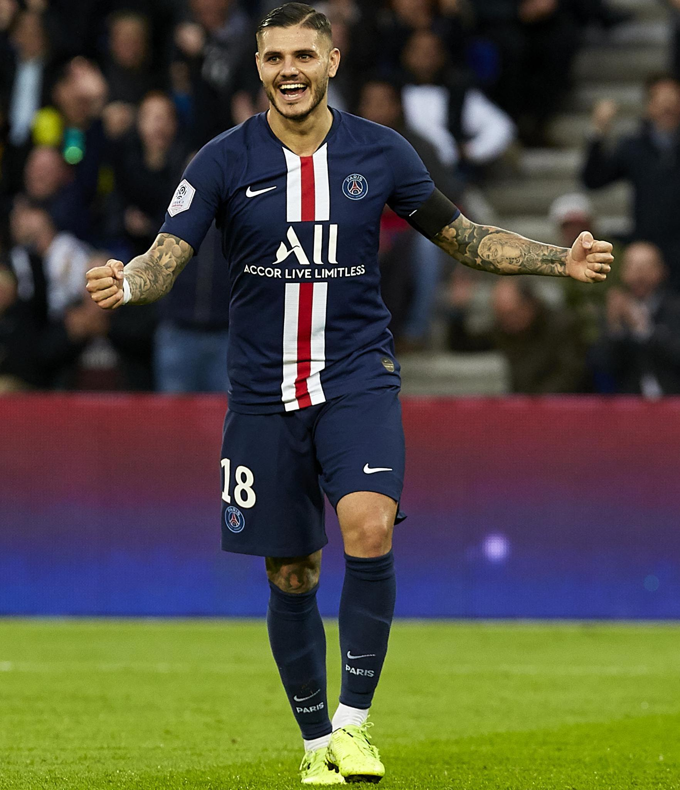

Mauro Icardi 9
| Birthdate | February 19th 1993, Rosario (Argentina) |
|---|---|
| Nationality | Argentinian |
| Profile | 181 cm / 75 kg |
| Skills | Right |
| Signed at PSG | September 2nd 2019 |
The Argentine striker joined Paris Saint-Germain on loan right at the end of the 2019 summer transfer window. The man from Rosario, Argentina, started his career at Barcelona’s La Masia academy before heading to Italy.
Icardi’s first taste of professional football came with Sampdoria before he made his name at Inter, where he was also named captain.
After a promising first campaign, in which he helped Paris to the Champions League final in 2020, Mauro signed a four-year deal with Paris Saint-Germain, through to 2024.
9Games played |
479Minutes played |
5Starts |
2Sub off |